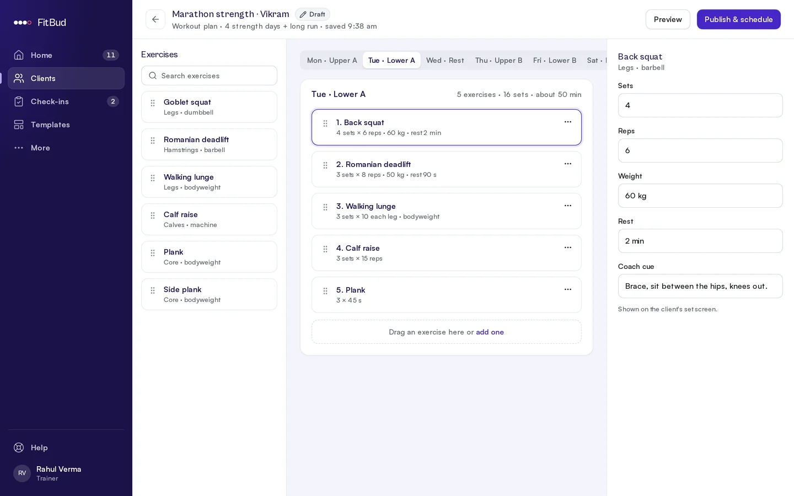
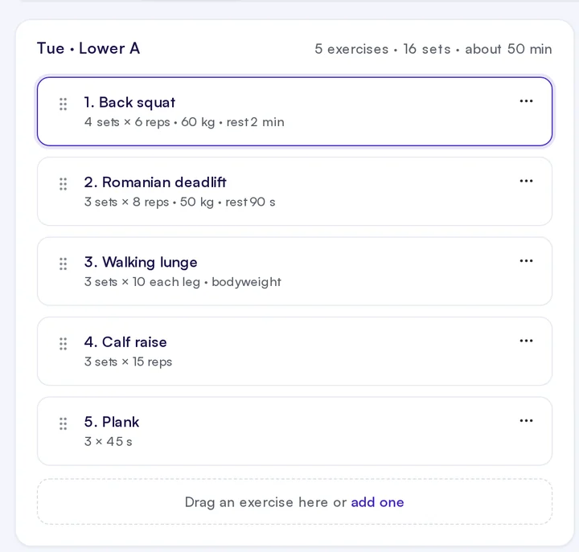
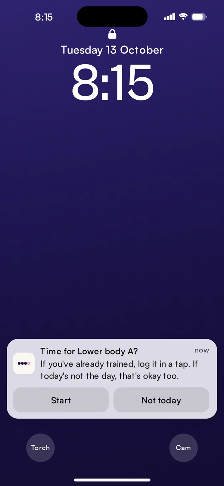
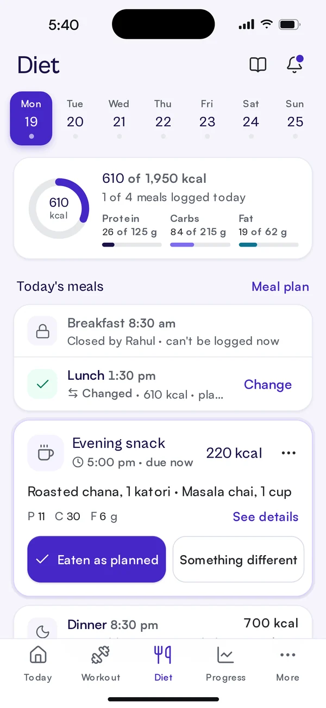
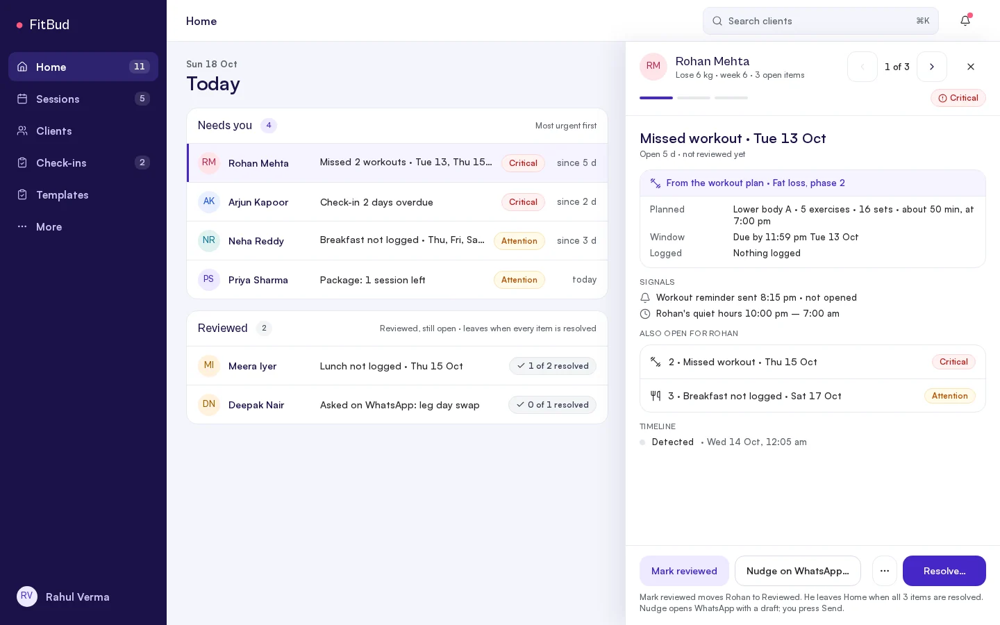
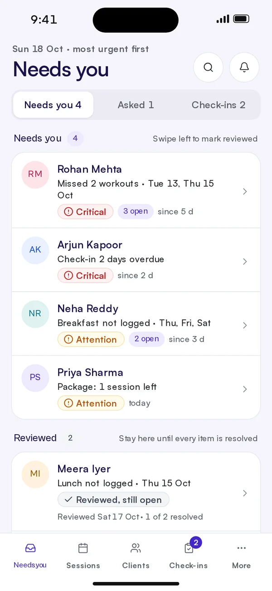

Step 1
You plan the week once.
Lower body A goes on Tuesday: five exercises, sets, reps, weight, rest and your coaching cue. Publish it, and every client on the plan has their day ready.


For freelance, online and hybrid trainers
FitBud is one connected workspace for independent trainers: workouts, nutrition, client progress and follow-ups, without stitching together spreadsheets, forms and chats.
Built around the real workflows of independent coaches.
The problem
Each tool does its job. The work is keeping them in sync, and that work grows with every client you add.
It works. Until it doesn't.
And building your own app?
Developers, bugs, hosting, update requests, feature lists. You became a trainer to coach people.
Here's how FitBud helps
"Why aren't my clients logging?"
 We know why.
We know why.
The hidden friction
After a long day, your client is asked to remember what they ate, guess quantities they never measured and fill in one more form. Eventually, they won't.
So you follow up. Then follow up again. And your coaching time goes into chasing information.
Your clients aren't lazy. Your tracking might just be asking too much from them.
"Why am I answering the same questions every day?"
 We know why.
We know why.
The philosophy
Routine updates should just happen, so your attention goes to the clients who actually need you.
Your clients need your coaching.
They don't need to ask you everything.
How FitBud works
Follow Rohan's Tuesday session through FitBud. Swipe or pick a step.
Lower body A goes on Tuesday: five exercises, sets, reps, weight, rest and your coaching cue. Publish it, and every client on the plan has their day ready.


At his workout time, a reminder asks if it's time for Lower body A. Already trained? Log it in a tap. Not today? That's an answer too. Nobody had to send a message.

Meals work the same way. The plan is already on the screen, so "Eaten as planned" is one tap. FitBud only asks for detail when something was different.

Rohan skipped Tuesday and Thursday. On Sunday he's at the top of your list: what was planned, that the reminder went unopened, and how long it's been open. Nudge on WhatsApp, add a note, or resolve it. Nothing closes until you do.


Screens are from the current design. FitBud is in development.

Trainers don't have a motivation problem, and neither do most of their clients. They have a system that was fine at five clients and is creaking at twenty.
We're building FitBud for the trainer in between: good enough to grow, too busy to build their own tools. We're starting small, with a closed group of trainers, and building from what they tell us.
FitBud is still being built. Join the early-access list and we'll reach out as we open it to more trainers.